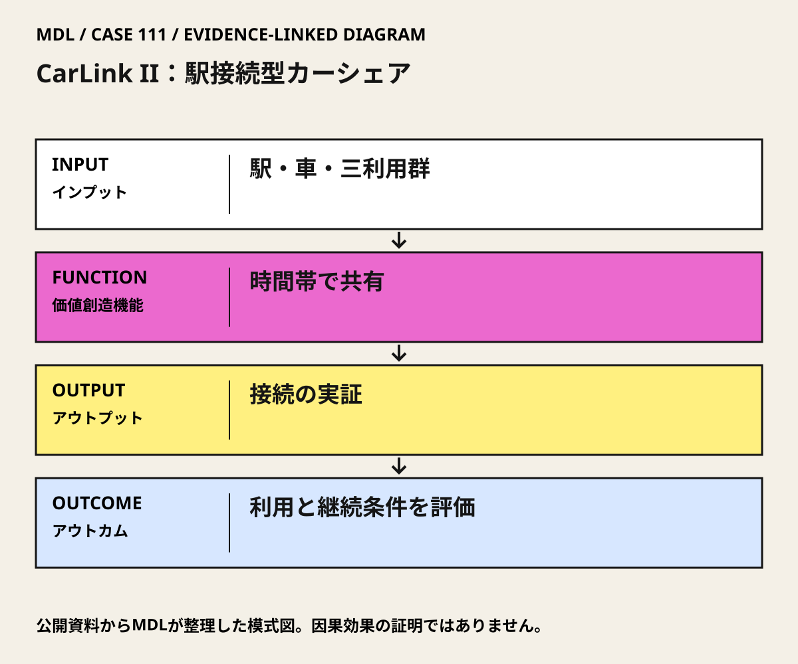

I / INPUT
何を持ち込んでいるか。
活動の出発点となる資源と課題を分けて整理します。「自社」は、その場・制度を運営する組織を指します。
- 自社・運営組織
Shaheenを筆頭著者とする共同評価チーム。評価はPATH研究者が担当。
公開資料で確認出典 1- 他社・事業会社
American Hondaが共同実施に参加。Stanford Research Park周辺等の企業が職場側利用を支えた。
公開資料で確認出典 1- 行政・公共機関
CaltransとCaltrainが共同実施に参加。UC Davis ITSが実証管理を担った。
公開資料で確認出典 1- スタートアップ
特定スタートアップの育成を目的とした実証とは確認していない。商業移管とスタートアップ支援を同一視しない。
公開資料では未確認- アカデミア
UC Davis ITSの実証管理と、UC Berkeley PATH等の評価研究を分担。
公開資料で確認出典 1- 市民・利用者・現場
住宅側利用者、職場通勤者、職場の日中利用者が時間を分けて共有。調査標本は前後で異なる。
公開資料で確認出典 1
II / VALUE CREATION FUNCTIONS
資源を、どう価値へ変えるか。
以下は既存の8ステップへの編集上の対応づけです。各取り組みの公式な工程名や、全工程を自前で担うことを意味しません。
III / OUTPUT
直接、何が生まれたか。
試作品、データ、契約、標準、育成した人材など、活動から直接生まれたもの。
1年間の駅接続型カーシェア実証と、利用・技術・費用をまとめた最終研究報告。
公開資料で確認出典 1
IV / OUTCOME
その結果、何が変わったか。
実際の利用、行動、業務、事業、地域の変化。報告された変化と、当該活動に帰属できる効果は区別します。
PROJECT IN FOCUS / 具体的な事例
CarLink II：駅接続型カーシェア
確認できた段階：駅接続サービスの実証と研究評価 調査確認日 2026-10-06
生まれたもの
1年間の駅接続型カーシェア実証と、利用・技術・費用をまとめた最終研究報告。
確認できた変化
報告の前後調査ではCaltrain利用39.6%→62.7%、単独運転60.2%→37.3%。回答標本は前107人・後59人で異なり、同一集団の純効果ではない。
評価の限界：前後標本が異なり、参加者は高学歴・高所得層寄り。複数手段を使う回答があるため、割合の合計は100%を超える。無作為実験ではない。終了の存在を一般的な駅接続カーシェアの不成立と断定せず、地域条件と費用構造を検討する。
DESIGN BACKWARDS FROM IMPLEMENTATION
社会実装から逆算して、
何を先に整えているか。
実証の先にある導入・運用・継続から、この事例の設計を読み解きます。原典で確認できる仕組みと、MDLの設計解釈・他地域へ応用するための提案を区別して読んでください。「提案」「未実施」と記す内容は、当地で実施済みの工夫ではありません。仕組みの存在と、全案件で成果が出たことも別に扱います。
MORE DETAIL / 運営・根拠・応用
運営の全体像と、学びを深める資料。
費用負担、公表値、応用条件、写真・動画、原典を続けて確認できます。
01どう動かしているのか。
朝夕の駅アクセスと日中の職場利用を同じ車両で組み合わせる。質問票、移動日誌、面接、運行記録で利用変化を確認し、技術・運営費・利用料も別に検討する。
意思決定と本人の関与：学習上の判断：自治体・鉄道事業者・運営者が、公共交通接続の改善と事業収支を別々に判定し、商業化、公的支援付き運営、規模変更、終了を選ぶ。研究の好ましい行動指標だけで継続可能と判断しない。 Susan Shaheenは最終報告の筆頭著者・共同評価研究者。研究者個人を商業運営の単独責任者としない。
- 異なる利用時間を組み合わせる
- 利用変化を複数方法で確かめる
- 行動と採算を分けて扱う
02誰が負担し、誰が担うか。
実証の利用料は住宅側利用者と参加企業が負担。報告にはPATH、Caltrans、Honda、Caltrain等の貢献を記載するが、各機関の拠出額・負担比率は未確認。
制度やプログラムの財源と、各参加企業・地域に発生する費用は同じではありません。公開範囲を超える案件別予算・契約条件は未確認です。
03確認できたこと。
1年間の駅接続型カーシェア実証と、利用・技術・費用をまとめた最終研究報告。
読み取れる範囲：前後標本が異なり、参加者は高学歴・高所得層寄り。複数手段を使う回答があるため、割合の合計は100%を超える。無作為実験ではない。終了の存在を一般的な駅接続カーシェアの不成立と断定せず、地域条件と費用構造を検討する。
原典で確かめる ↗ 出典の説明 ↓04日本で活かすなら。
日本では鉄道利用者の増加だけで採択せず、住宅側と職場側の需要時間、予約競合、保守・再配置、撤退時の代替まで設計する。補助付き公共サービスと独立採算事業の判断基準を先に分ける。
05そのまま真似できないこと。
前後標本が異なり、参加者は高学歴・高所得層寄り。複数手段を使う回答があるため、割合の合計は100%を超える。無作為実験ではない。終了の存在を一般的な駅接続カーシェアの不成立と断定せず、地域条件と費用構造を検討する。
06次に、何を確かめるか。
提案・未実施：鉄道事業者と自治体交通担当が責任者を決め、運営候補と1駅で90日試行を設計。接続時間、鉄道利用、車両稼働、欠車率、全運営費、利用者負担を測り、現状維持、カーシェア、バス接続、自転車接続を比較。Continue＝接続改善と引受財源が両立、Pivot＝時間帯や車両規模を変更、Stop＝安全・必要な移動・継続負担者が確保できない。
07写真・図と原資料で確かめる。
現場の写真を見る ↑
DIAGRAM: モビリティデザインラボ · 根拠資料 ↗
図の説明
公開資料に基づく模式図。駅・車・三利用群 → 時間帯で共有 → 接続の実証 → 利用と継続条件を評価。実景や地理的配置を示さない。
2026-10-06 · MDL作成の説明図。第三者の写真・図面の複製ではありません。
冒頭写真：California Avenue駅の駅舎と前面空間
原資料で、当時の調査・実践を読む ↗08原典を読む。
CarLink II: A Commuter Carsharing Pilot Program Final Report ↗
ITS-Davis等の共同実施、PATH評価、前後調査、商業移管後の終了
英語・本人筆頭著者の最終研究報告。全文PDF・無料（186ページ）。ページ参照は印刷本文ページ。
駅への前後の移動と共有交通を結ぶ本人共著の原文。CarLink IIの独立評価ではない
英語・著者原稿。全文PDF・無料。